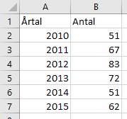
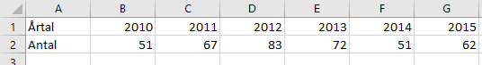

Datavisualisering
Peter M. Dahlgren, JMG
2017-08-18
Att presentera sitt forskningsresultat visuellt är viktigt för att dels kommunicera forskning och dels skapa bättre förståelse för resultaten. Här får du praktiska tips på hur du kan göra tabeller och diagram som är någorlunda snygga, korrekta och pedagogiska.
Se detta som tips på hur du kan utforma dina tabeller och diagram, inte som regler som slaviskt måste följas. Tipsen riktar sig först och främst till vetenskapliga tabeller och diagram, men kan också användas till journalistiska tabeller och diagram.
Mjukvara
- Gör diagram i Microsoft Excel.
- Tabeller kan göras i Microsoft Word eller Excel.
- Använd inte Numbers för Mac. Det är för dåligt.
- Kopiera aldrig tabeller eller diagram från SPSS. De är horribla. Gör egna i stället.
Excel är både vanligt och enkelt. Det finns dock flera gratisalternativ, till exempel (från enkelt till svårt): Data Explorer, Tableau och R med ggplot.
Grunderna i datavisualisering
Ibland brukar man prata om explorativ dataanalys. Det betyder att man inledningsvis utforskar datan för att se vad den innehåller. Explorativ dataanalys är med andra ord endast till för att forskaren ska kunna bilda sig en uppfattning om datan, ofta med hjälp av diagram och tabeller som.
Vanliga tabeller och diagram som används under explorativ dataanalys som är bra att känna till:
- Frekvenstabell
- Korstabell
- Histogram
- Box plot (ibland också Lådagram eller Whisker Plot)
Denna text handlar dock inte om explorativ dataanalys, utan om visualisering som du vill publicera eller visa upp för andra. Men första steget till att hitta denna data är dock en explorativ dataanalys.
Några tips när du utformar diagram och tabeller:
Diagram och tabeller bör kunna läsas fristående från texten. Tanken är att någon som skummar texten också kan ta till sig det viktiga bara genom att titta på diagrammet eller tabellen.
Gå från det enkla till det komplicerade. När man presenterar diagram och tabeller är det viktigt att inte ge allt för mycket information på en gång. Undvik att besvara alla frågeställningar med en enda tabell eller diagram. Börja i stället enkelt och presentera beskrivningar av datan (deskriptiv analys). Därefter kan du visa på intressanta samband (bivariat analys) för att därefter presentera mer komplicerade modeller (multivariat analys). Börja med andra ord med det enkla och gå successivt mot det mer komplicerade. Vad man ska välja att presentera? Du måste veta vad din forskningsfråga är, och därmed vad du bör välja bort. Därför underlättar det betydligt om man har ett genomtänkt syfte och åtminstone en idé om hur det färdiga resultatet kan se ut.
Tabeller
Alla diagram börjar med en tabell, och det är därför viktigt att känna till hur tabellerna utformas.
Dataformat
Det mest tidskrävande med datavisualisering är ofta att se till att datan är anpassad för det program man använder. När man förbereder data för Excel eller statistikprogram kan datan ibland behöva vara i rätt format.
Man brukar skilja mellan två dataformat: långt och brett.
Långt dataformat: 
Brett dataformat: 
Tabellens delar
En tabell i en vetenskaplig publikation består ofta av tre delar: tabellhuvud, tabellresultat och tabellkommentar.
Exempel från boken Ekvilibrium (red. Ohlsson, Ekengren Oscarsson & Solevid) från 2016, s. 94.
I tabellhuvudet skrivs först och främst tabellens nummer för att kunna hänvisa till tabellen i den löpande texten. Det gör det enkelt för läsaren att hitta rätt tabell.
Efter tabellnumret kommer en kort rubrik. Den bör vara slagkraftig och koncis men också redovisa tidsperiod, analysenheter och enheten (exempelvis procent). Om du redovisar resultatet av en frågeundersökning kan själva frågan också skrivas i rubriken. Skriv enkelt, krångla inte till språket i onödan.
I tabellresultatet är den viktigaste informationen. Du bör inte använda decimaler, utan avrunda helst om möjligt. Om du redovisar procent så avrunda också summan till 100 procent. Då ser man om procenten summeras på raden (som på bilden ovan) eller i kolumnen.
- Om du jämför två tidsperioder kan det vara bra att framhäva skillnaderna i en egen kolumn.
- Om du jämför två grupper med varandra (exempelvis män respektive kvinnor) kan det vara bra att använda en kolumn för samtliga tillsammans (totalt).
- Om tabellen blir stor och svår att överblicka kan du lösa det på två sätt. Markera det viktigaste genom fetmarkering eller inringning. Eller slå ihop kategorier så att de blir färre.
I tabellkommentaren skriver du mer utförlig information om exempelvis hur variabler har slagits ihop eller skapats, källa till datamaterialet eller hur tabellen ska tolkas.
- Använd lite mindre textstorlek i tabellkommentaren.
- Beskriv vad kategorin ”Övrigt” innehåller.
- Skriva antalet analysenheterna, såsom N=1 585, eller mer pedagogiskt “antal svar”.
- Skriv signifikansnivåerna om du använder asterisker (*) i tabellresultatet. Vanligtvis skrivs de:
| Stjärnor | p-värde | Signifikansnivå |
|---|---|---|
| * | p < 0,05 | 95 % |
| ** | p < 0,01 | 99 % |
| *** | p < 0,001 | 99,9 % |
Det rekommenderas dock inte att du använder asterikser om du kan undvika det. Tumregeln är att alltid skriva ut p-värdet med tre decimaler.
Korstabell
En korstabell (contingency table eller cross tab) innehåller 2-4 variabler.
När man gör en korstabell är det viktigt att den summeras på rätt sätt (exempelvis kolumnvis) eftersom varje sätt att summera ger svar på olika frågeställningar. Se bilden nedan för exempel på hur data kan summeras i en korstabell.
En enkel tumregel kan vara att alltid hålla dig till kolumnprocent och placera den oberoende variabeln i kolumnen. Då summeras den alltid nedåt. I bilden nedan är kön oberoende variabel och den summeras nedåt när kolumnprocent används.
Anledningen till att vi använder procent, snarare än det “råa” antalet, är för att procent är standardiserad och kan jämföras. Vi jämför då andelen kvinnor och män, snarare än antalet kvinnor och män. Då gör det ingenting att den ena gruppen är större än den andra.
Olika sätt korstabeller kan summeras: antal, kolumnprocent, radprocent och totalprocent.
Effektparametertabell
En effektparametertabell är ett sätt att förminska en stor korstabell med tre variabler. Effektparametertabellen innehåller bara de viktigaste beståndsdelarna.
På SPSS-Akuten finns en bra guide om hur du gör en effektparametertabell från en korstabell.
Exempel på effektparametertabell.
Diagram
Diagram är det vanligaste sättet att presentera mycket data. En bra tabell är en grundförutsättning för ett bra diagram.
Det finns dock några tips du bör tänka på när du skapar diagram.
Innehåll
- Försök inte trycka in allt för många saker i ett enda diagram. Behöver du visa många saker, gör många diagram.
- Låt någon utomstående titta på ditt diagram. Förstår han eller hon? Om inte, gör om!
Axlar
- Lägg den oberoende variabeln på den horisontella axeln (X).
- Lägg den beroende variabeln på den vertikala axeln (Y).
- Låt axeln börja på 0 (exempelvis 0 till 100 procent), om du inte har goda skäl för något annat.
Linjer
- Använd olika typer av linjer (streckade, heldragna m.fl.) för att skilja dem åt.
Perspektiv och färger
- Undvik 3D-diagram.
- Använd hög kontrast.
- Följ ett färgschema, se exempelvis Practical Rules for Using Color in Charts.
- Diagram bör kunna skrivas ut i svartvitt. Förlita dig därför inte enbart på olika färger för att skilja linjer åt.
Många diagram
Ska du visa många diagram jämte varandra? Tänk då på att:
- Använd samma skalstorlek (exempelvis 0-100 procent) på alla diagrams axlar. Om du har 0-20 på ett diagram och 0-70 på ett annat blir de svårare att jämföra.
- Gör ett snyggt diagram en gång. Kopiera och klistra sedan in det flera gånger för att spara tid. Använd mallen för Excel som finns här.
Pajdiagram
Pajdiagram är runda och ser ut som pajer, där varje del i pajen representerar en andel. Dessa bör du inte använda av två skäl:
- Det är svårt att uppskatta den relativa storleken på respektive andel.
- Det går inte att jämföra två pajdiagram med varandra på ett enkelt sätt.
Om du ändå vill använda pajdiagram bör du tänka på att:
- Använd inte mer än 7 kategorier. Annars blir det svårt att överblicka. Sikta på 2-3 kategorier (till exempel män/kvinnor).
- Kategorierna presenteras från störst till minst. Om du exempelvis sorterar de fem största städerna så bör Stockholm vara först, följt av Göteborg och så vidare.
- Den största kategorin placeras med början klockan 12 och rör sig sedan medsols mot exempelvis klockan 4 (Stockholm). Därefter följer kategorierna i fallande ordning, från klockan 4 till klockan 6 (Göteborg), och så vidare.
Linjediagram
Linjediagram är användbara när du ska visa trender eller tidsserier.
Lägg gärna etiketterna (i det här fallet “Förtroende för regeringen”) i slutet av linjen. Det gör det lättare att se vad linjerna representerar, utan att man behöver hoppa fram och tillbaka med blicken mellan linjen och en förklaringsruta.
Exempel från boken Ekvilibrium (red. Ohlsson, Ekengren Oscarsson & Solevid) från 2016, s. 58.
Stapeldiagram
Stapeldiagram är användbara när du vill jämföra två eller fler kategorier. En frekvenstabell med kategoriska variabler kan lämpligen göras om till ett stapeldiagram.
Använd liggande stapeldiagram när du har många kategorier och man ska kunna läsa dem med enkelhet. Liggande stapeldiagram är också användbart när kategorinamnen (i det här fallet Aftonbladet, Expressen etc.) är långa och blir svårlästa på X-axeln.
Sortera listan på ett relevant sätt, exempelvis från högsta till lägsta värdet. Lägg värdena i slutet av staplarna så att dessa framgår tydligt.
Exempel på liggande stapeldiagram.
Grupperat stapeldiagram
Grupperade stapeldiagram är användbara om du behöver jämföra grupper med varandra. En korstabell med kategoriska variabler kan lämpligtvis göras om till ett grupperat stapeldiagram.
Tänk på att förenkla så att det inte blir för många staplar. Du kan exempelvis slå ihop kategorier. Lägg gärna värdet ovanför eller i stapeln.
Sortera gärna staplarna på ett logiskt sätt, som i det här fallet utifrån ökande ålder.

Exempel på grupperat stapeldiagram.
Staplad fraktionsstapel
En staplad fraktionsstapel visar andelen (fraktionen) av helheten. En korstabell med kategoriska variabler som du vill jämföra kan lämpligtvis göras om till en staplad fraktionsstapel.
När du gör en fraktionsstapel behöver du inte göra om din data till procent, Excel gör det automatiskt.
En staplad fraktionsstapel fungerar bra för att visa Likert-skalor. De kan enkelt jämföras genom att man placerar flera staplar jämte varandra. Sifforna i respektive stapel uppgår till hundra procent.
Exempel på hur en Likert-skala kan omvandlas till ett diagram.
Fraktionsstapeln kan också placeras liggande om man har många kategorier:

Exempel på liggande fraktionsstapel.
Mall för Excel
Du kan ladda ned en mall för Excel som du kan använda när du gör dina diagram.
Mallen innehåller i dagsläget:
- grupperat stapeldiagram
- liggande stapeldiagram för Likert-skalor
- linjediagram för tidsserier
Ladda ned: diagram-mall.xlsx
Visualisera variabler
I föregående avsnitt visades vilka typer av diagram som finns, och hur många variabler som behövs. Vi kan också vända på frågan: Vilken typ av diagram bör jag använda när jag har X antal variabler?
Visualisera 1 variabel
| Typ av variabel | Diagram |
|---|---|
| Kvalitativ variabel | Pajdiagram, stapeldiagram, dot plot |
| Kvantitativ variabel | Histogram, box plot, dot plot, jitter plot, density plot |
Visualisera 2 variabler
| Typ av variabel | Diagram |
|---|---|
| 2 kvalitativa variabler | Grupperat stapeldiagram, fraktionsstapel |
| 1 kvalitativ och 1 kvantitativ variabel | Stapeldiagram, linjediagram, box plot, violin plot |
| 2 kvantitativa variabler | Linjediagram, scatter plot, frequency heatmap |
I linjediagrammet läggs den oberoende variabeln (X) på den liggande axeln. Den beroende variabeln (Y) läggs på den stående axeln.
Visualisera 3 variabler
| Typ av variabel | Diagram |
|---|---|
| 3 kvalitativa variabler | Stapeldiagram, korstabell |
| 2 kvalitativa och 1 kvantitativ variabel | Stapeldiagram, linjediagram |
| 1 kvalitativ och 2 kvantitativa variabler | Stapeldiagram, linjediagram |
| 3 kvantitativa variabler | Linjediagram |
I linjediagrammet läggs den oberoende variabeln (X) på den liggande axeln. Den beroende variabeln (Y) läggs på den stående axeln. Den tredje interaktionsvariabeln (Z) delas upp i två kategorier (exempelvis man/kvinna eller låg/hög utbildning) och varje kategori får en egen linje.
En fördel med linjediagram med tre variabler (jämfört med stapeldiagram) är att linjediagram ibland är enklare att tolka. Är linjerna parallella finns det ingen interaktion. Är avståndet litet är också additiviteten liten (det vill säga, variablerna ökar inte tillsammans). De fyra kombinationerna finns i tabellen nedan:
| Linjer parallella | Linjer avstånd | Interaktion? | Additivitet? | Tolkning |
|---|---|---|---|---|
| Parallella | Kort avstånd | — | — | Ingen interaktion och låg additivitet |
| Parallella | Långt avstånd | — | Ja | Ingen interaktion och hög additivitet |
| Ej parallella | Kort avstånd | Ja | — | Interaktion och låg additivitet |
| Ej parallella | Långt avstånd | Ja | Ja | Interaktion och hög additivitet |
Glöm inte den löpande texten
Du behöver inte presentera allt som diagram. Glöm inte bort att utnyttja den löpande texten på ett effektivt sätt.
Har du gjort en surveyundersökning kan du börja med beskrivande statistik av deltagarna, vilket ofta tar upp mindre plats än tabeller eller diagram:
Respondenterna var 18–45 år (M=31; SD=7) och majoriteten (56 %) hade en högskoleexamen.
Denna korta mening ger information om åldersspannet (18-45), vad medelåldern är (M) samt standardavvikelsen för åldern (SD). Med denna information går det någorlunda enkelt att få en bild av åldersdistributionen.
Därefter kan du gå vidare med att beskriva intressanta samband, även det i den löpande texten:
Det fanns ett starkt positivt samband mellan nyhetskonsumtion och politisk kunskap (r=0,61; p<0,001), men inte mellan nyhetskonsumtion och attityd (r=0,02; p=0,528).
I det här fallet står r för Pearsons korrelationskoefficient och p står för sannolikheten från signifikanstestet. Ibland kan det också vara bra att skriva ut vilken typ av signifikanstest det är (enkelsidigt eller dubbelsidigt), om det inte framgår av sammanhanget.
Skriv alltid ut det fullständiga p-värdet med tre decimaler, till exempel p=0,039. Då undviker du avrundningsfel, så att p=0,051 inte blir p<0,05 av misstag, och du undviker också att p-värdet behandlas dikotomt som signifikant (p<0,05) respektive icke-signifikant (p>0,05).
Se även
- DataViz project - katalog över olika typer av grafer och vilken typ av data som krävs för att skapa graferna.
- Checklista för statistika undersökningar - kritiska frågor för att bedöma någons tabeller eller diagram.
Video
Introduction to data visualization
An introduction to the practice of data visualization, with theory, examples, and good humor. Studio rerecording of a presentation at McGill University graduate students.
Data Visualization Best Practices
Learn how to get the most out of your business intelligence platform including how to choose the right chart type, and how to optimise your charts to make them easier to understand and more attractive.
Böcker
- Cairo, A. (2016). The Truthful Art: Data, Charts, and Maps for Communication. New Riders.
- Few, S. (2012). Show Me the Numbers: Designing Tables and Graphs to Enlighten (2nd edition). Burlingame, Calif.: Analytics Press.
- Tufte, E. (2001). The Visual Display of Quantitative Information (2nd edition). Cheshire, Conn: Graphics Pr.
- Wallgren, A., & Wallgren, B. (2008). Diagram - statistikens bilder. Stockholm: Norstedts juridik.